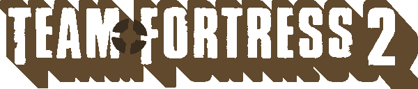

¿ Que es Team Fortress 2 ?

Team Fortress 2 es un videojuego en línea de disparos en primera persona producido y publicado por Valve en 2007, siendo este la secuela del mod de Quake de 1999 (conocido como Team Fortress Classic).

Siendo inicialmente parte de la Orange Box, es un juego actualmente "free-to-pĺay" (es decir, un juego gratuito) disponible tanto en windows, macOS y linux mediante la plataforma Steam, como en Playstation 3 y Xbox 360 mediante la anteriormente mencionada Orange Box.
¿ Qué hacemos ?
Dentro de Team Fortress jugaremos como el equipo R.E.D (Reliable Excavation Demolition) o B.L.U (Builder League United) en los cuales podremos elegir alguna de las nueve Mercenarios o Clases: Scout, Soldier, Pyro, Demoman, Heavy, Engineer, Medic, Sniper y Spy.


Con los mercenarios podremos jugar en una gran variedad de lugares y ubicaciones con distintos modos de juego que giran alrededor de conceptos específicos: capturar una bandera mientras se defiende la propia; transportar al mismo objetivo(suele ser un carrito) a travez de todo el mapa hasta llegar al final; y tomar/defender uno o varios puntos de control del equipo enemigo. usualmente existe una limitación de tiempo que tiene el fin de limitar la duración de ciertos modos de juego que pueden llevar a partidas largas(como pueden ser "Captura la Bandera") y de funcionar como incentivo a que se cumpla el objetivo.


A pesar de ser estas las características de los modos de juego principales, existen modos de juegos secundarios con algunos añadidos: como nuevos enemigos, personajes jugables, o modificaciones a los conceptos anteriormente mencionados.


¿ Y que es esta página ?
Ya tenemos un conocimiento general de lo que es Team Fortress 2, ahora ¿qué es esto?. Está página web tiene el propósito de funciona como una especie de "wiki": mostrando un poco de la historia, personajes y elementos importantes de este universo. junto a algunos juegos tematizados del mismos.
Esperamos que disfrute su estadía en esta página.
